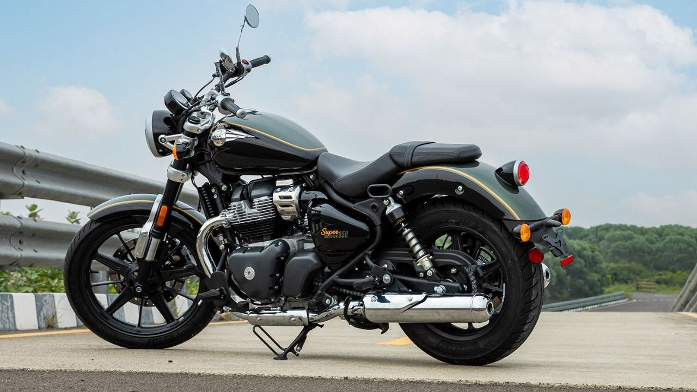

Sport Touring motori
Super Meteor 650 i Interceptor 650 — motori za avanture i duge putovanje s stilom.

Royal Enfield Super Meteor 650
Opis
Super Meteor 650 je moćan cruiser koji kombinira klasičan dizajn s modernom tehnologijom. Idealan za putovanja i svakodnevnu vožnju.
Specifikacije
- Motor: 648cc, dvocilindarski, 4-taktni
- Snaga: 47.3 KS @ 7250 RPM
- Moment: 52 Nm @ 5550 RPM
- Cijena: 8.490,00 €
Prednosti
- Odličan dizajn i stil
- Dovoljna snaga za brže vožnje
- Komforan sjedni položaj
- Dobar za duge putovanje
- Kvalitetna oprema
Mane
- Skupiji od manjih modela
- Viša potrošnja goriva
- Teži od starter motora

Royal Enfield Interceptor 650
Opis
Interceptor 650 je retro classic motocikl s bogatom poviješću. Moderne performanse u klasičnom paketu — savršen za ljubitelje vintage stila.
Specifikacije
- Motor: 648cc, dvocilindarski, 4-taktni
- Snaga: 47.3 KS @ 7250 RPM
- Moment: 52 Nm @ 5550 RPM
- Cijena: 7.790,00 €
Prednosti
- Klasičan, ikoniski dizajn
- Moćna i dinamična vožnja
- Odličan za curving i spirale
- Povoljne cijene rezervnih dijelova
Mane
- Manje komforan od Super Meteora
- Manji prostor za prtljagu
- Skupiji od starter motora